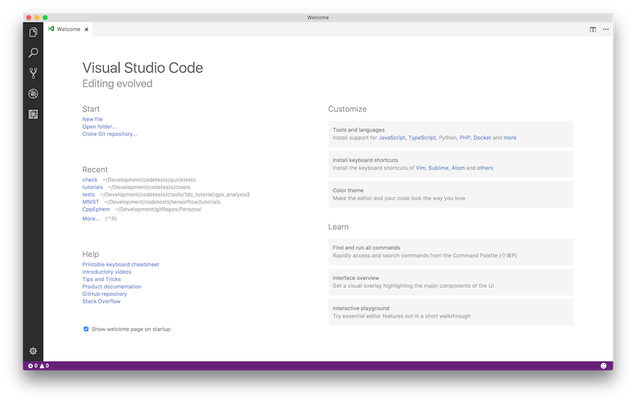
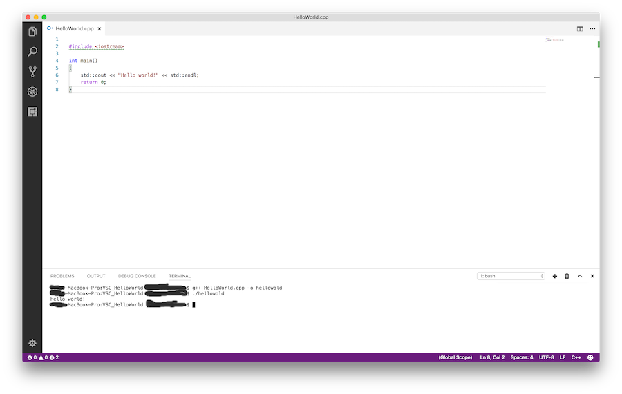
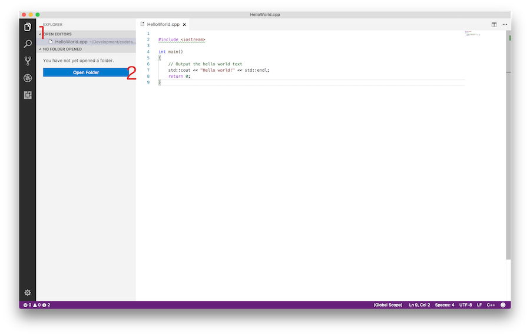

La première étape consiste à créer un nouveau projet. Pour ce faire, chargez le programme VS Code. Vous devriez être accueilli avec l'écran d'accueil typique. Pour créer le premier programme, sélectionnez " Démarrer "> " Nouveau fichier " dans l'écran d'accueil. Cela va ouvrir une nouvelle fenêtre de fichier. Allez-y et enregistrez le fichier (" Fichier "> " Enregistrer ") dans un nouveau répertoire. Vous pouvez nommer le répertoire comme vous le souhaitez, mais cet exemple appelle le répertoire " VSC_HelloWorld " et le fichier " HelloWorld.cpp ".

Exécuter le script (basique) Nous pouvons exécuter " HelloWorld.cpp " depuis le code VS lui-même. Le moyen le plus simple d’exécuter un tel programme est d’ouvrir le terminal intégré (" Affichage "> " Terminal intégré "). Cela ouvre une fenêtre de terminal dans la partie inférieure de la vue. De l'intérieur de ce terminal, nous pouvons naviguer dans notre répertoire créé, créer et exécuter le script que nous avons écrit.

Lancer le script (un peu plus avancé)
Génial, mais nous pouvons utiliser le code VS directement pour créer et exécuter le code également.
Pour cela, nous devons d'abord transformer le répertoire
" VSC_HelloWorld " en espace de travail. Cela peut être fait par:
1. Ouverture du menu de l' explorateur (le plus haut élément du menu vertical à l'extrême gauche)
2. Sélectionnez le bouton Ouvrir un dossier
3. Sélectionnez le répertoire " VSC_HelloWorld " dans lequel nous travaillons.

L'étape 1 consistera à créer un nouveau projet. Cela peut être fait de plusieurs manières. Le
premier moyen provient directement de l'interface utilisateur.
1. Programme Open VS Code. Vous serez accueilli avec l'écran d'accueil standard (notez que les
images sont prises pendant que vous travaillez sur un Mac, mais qu'elles doivent être similaires à
votre installation):
2. Dans le menu Démarrer , sélectionnez Nouveau fichier . Cela ouvrira une nouvelle fenêtre
d'édition où nous pourrons commencer à construire notre script. Allez-y et enregistrez ce fichier
(vous pouvez utiliser le menu Fichier > Enregistrer pour le faire). Pour cet exemple, nous allons
appeler le fichier HelloWorld.cpp et le placer dans un nouveau répertoire que nous appellerons
VSC_HelloWorld / .
3. Écrivez le programme. Cela devrait être assez simple, mais n'hésitez pas à copier ce qui suit
dans le fichier: